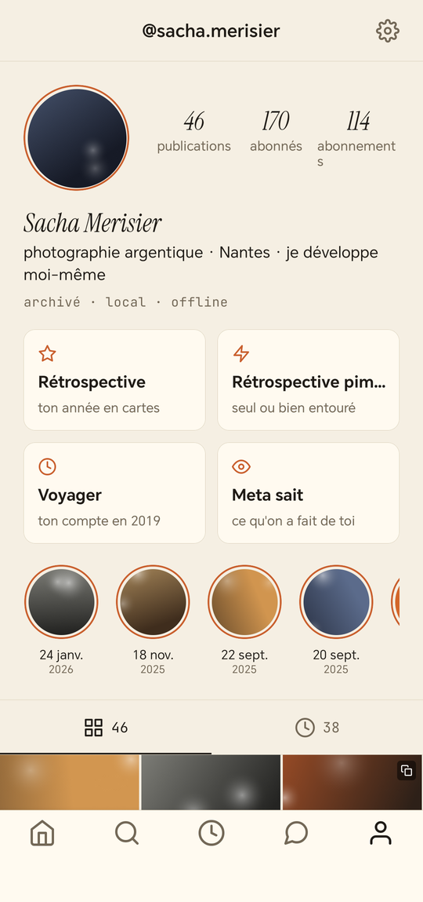
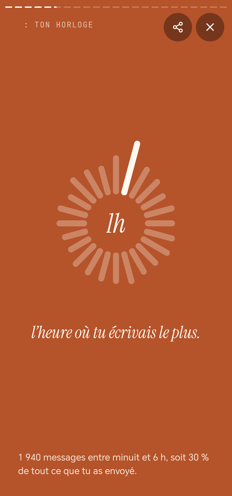
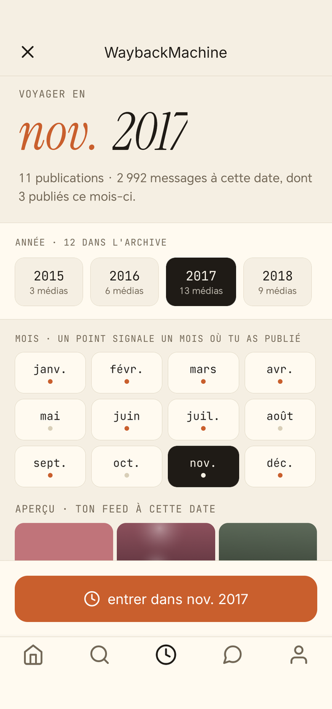

ton archive,
hors-ligne.
Tu as quitté le réseau, ou tu comptes le faire. Il reste des années de photos,
de conversations et de stories dans un fichier .zip que personne
ne sait ouvrir. Argentique le rouvre : ton feed, tes
conversations, tes stories, ton profil et tes contacts, tels qu'ils étaient,
sur ton téléphone.
état · août 2026
Argentique n'est pas encore publiée. Elle fonctionne, elle est en préparation de dépôt sur Google Play, et elle a besoin d'une chose que rien ne peut accélérer : douze personnes qui la testent pendant quatorze jours consécutifs. C'est Google qui l'exige avant d'autoriser la publication.
Il te faut un téléphone Android et ton propre export de données. Demande-le maintenant : la plateforme met de quelques heures à plusieurs jours à te le livrer, et c'est le délai qui fait perdre une semaine à ceux qui s'y prennent le jour de l'installation.
En échange : l'accès complet, à vie, et des remerciements sincères.
Rejoindre le test ferméAdresse de contact à renseigner : [À COMPLÉTER]
ce qui n'est pas une promesse commerciale
aucune donnée ne sort,
et ça se vérifie
La plupart des applications promettent de ne rien envoyer. Celle-ci
ne le peut pas : la version publiée est compilée sans
android.permission.INTERNET. En son absence, le système refuse
toute connexion au niveau du noyau, quelle que soit la partie du code qui la
tenterait, y compris une bibliothèque tierce que je n'ai pas écrite.
Tu n'as pas à me croire : télécharge l'APK et lance la commande. Le binaire de développement, lui, conserve la permission — c'est ce qui rend la vérification intéressante, les deux sortent du même code source.
Il n'y a donc ni serveur, ni compte, ni mesure d'audience, ni publicité. Et
ton archive n'est jamais copiée : Argentique lit directement le
.zip d'origine, sans le modifier.
ce que tu retrouves
tout ce que l'export contient
-
Ton feed
Dans l'ordre, avec les légendes d'époque, carrousels compris.
-
Tes conversations
Texte, photos, vidéos, messages vocaux, partages et réactions.
-
Tes stories et ton profil
Y compris ce que la plateforme gardait sans jamais te le montrer.
-
Une vraie recherche
Sur les légendes, le contenu des messages et les pseudos.
la waybackmachine
choisis un mois.
l'application entière s'y replie.
Publications, stories, conversations, et jusqu'au contenu de chaque fil : tout se filtre sur le mois choisi, et l'interface prend les couleurs qu'avait cette année-là, en clair ou en sombre.
Le sélecteur ne propose que les années réellement présentes dans ton archive, et signale d'un point les mois où tu as publié. La plupart des archives ne couvrent qu'une poignée de mois : autant le voir tout de suite.
la rétrospective
ta rétrospective, calculée
sur ton téléphone
Les rétrospectives de fin d'année sont calculées sur un serveur qui lit tes données. Celle-ci est calculée hors-ligne, à partir d'un fichier que tu as téléchargé toi-même.
Année par année ou sur l'archive entière : la personne à qui tu as le plus écrit, les comptes suivis d'un bout à l'autre, la date de ton tout premier message, l'heure à laquelle tu écrivais vraiment, les conversations nourries restées sans suite.
Et quand tu partages une carte, il y a un interrupteur. « La personne à qui tu as le plus écrit » n'est pas seulement ta donnée : c'est aussi la sienne. Activé, seules les initiales sortent du téléphone.



Captures prises sur une archive de démonstration : aucune donnée réelle, aucune personne réelle.
à savoir avant d'installer
ce qu'Argentique ne peut pas faire
- L'export ne contient que ce que tu as fait. Les « j'aime » reçus, les vues de tes stories, les commentaires qu'on t'a laissés n'y sont pas. Aucune application ne peut te les montrer, et celle-ci ne fait pas semblant.
-
Ce n'est pas un outil de sauvegarde. Argentique lit tes
fichiers, elle ne les remplace pas. Garde tes
.zip. - La profondeur de l'archive ne dépend pas d'elle. Certains exports remontent à la création du compte, d'autres commencent bien plus tard. L'application te dit ce qu'elle a reçu, elle ne peut pas inventer ce qui manque.
- Android uniquement pour cette première version.